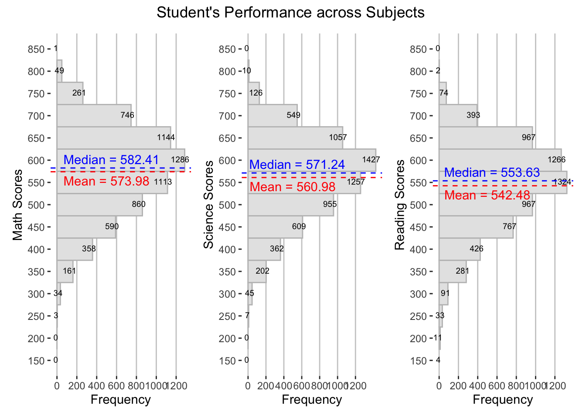
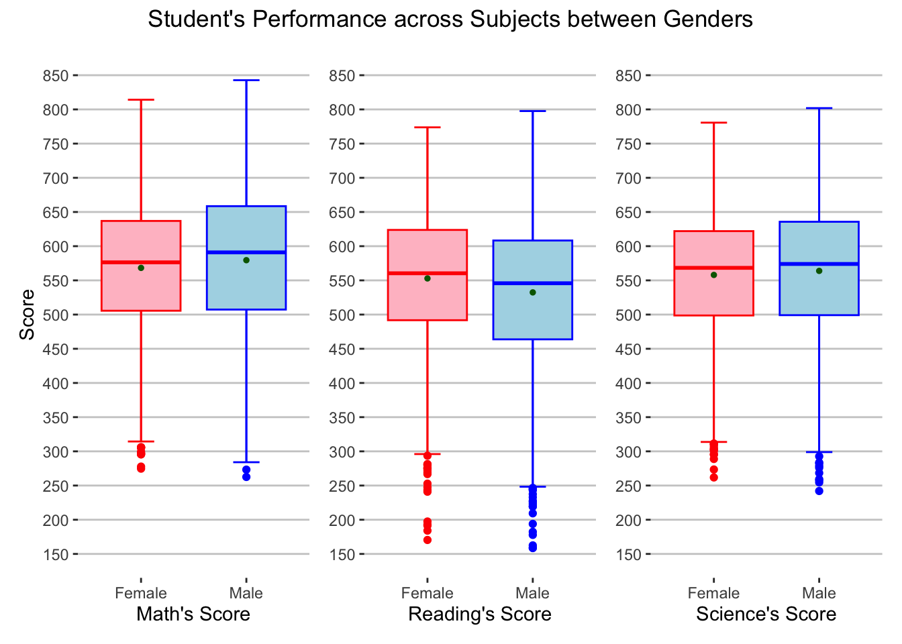
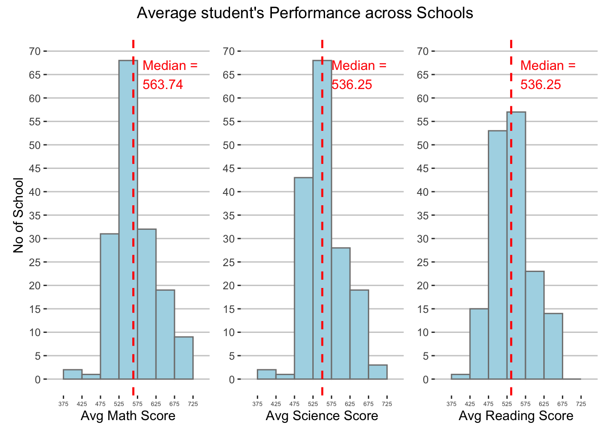

pacman::p_load(tidyverse, haven, patchwork)DataViz Makeover
Overview
in this take home exercise, I will make over take-home exercise 1 of my classmate. I will try to improve his figures.
Getting started
Loading packages
we are going to use several packages beforehand.
Importing dataset
we are going to use the same dataset of student questionnaire, we are going to follow the steps;
- Importing the data in sas data type
stu_qqq <- read_sas('data/cy08msp_stu_qqq.sas7bdat')- Filtering the data to singapore
stu_qqq_SG <- stu_qqq %>%
filter(CNT == "SGP")- Export the filtered dataset to rds to ease further data importing
write_rds(stu_qqq_SG, 'data/stu_qqq_SG.rds')- Read the exported rds
stu_qqq_SG <- read_rds('data/stu_qqq_SG.rds')Data preparation and wrangling
Data preparation
Filtering the columns that will be used for further analysis, in this analysis we are going to take 6 variables, they are:
CNTSCHID = school_id
ST004D01T = gender
math = average of 10 math possible values
science = average of 10 science possible values
read = average of 10 reading possible values
ESCS = social economic
Rename the columns to a more understandable names
Recode the answers of questions to a more descriptive measures
Change the columns data type
stu_qqq <- stu_qqq_SG %>%
mutate(math = rowMeans(select(stu_qqq_SG,
PV1MATH,PV2MATH,PV3MATH,PV4MATH,PV5MATH,PV6MATH,PV7MATH,PV8MATH,PV9MATH,PV10MATH)),
science = rowMeans(select(stu_qqq_SG,
PV1SCIE,PV2SCIE,PV3SCIE,PV4SCIE,PV5SCIE,PV6SCIE,PV7SCIE,PV8SCIE,PV9SCIE,PV10SCIE)),
read = rowMeans(select(stu_qqq_SG,
PV1READ,PV2READ,PV3READ,PV4READ,PV5READ,PV6READ,PV7READ,PV8READ,PV9READ,PV10READ))
) %>%
select(CNTSCHID,ST004D01T,math,science,read,ESCS) %>%
rename(c(school_ID = "CNTSCHID",
gender = "ST004D01T",
socio_economic = "ESCS")) %>%
mutate(gender = recode(gender,
"1" = "Female",
"2" = "Male"))
stu_qqq_sch <- stu_qqq %>%
group_by(school_ID) %>%
summarise(
average_math = mean(math),
average_read = mean(read),
average_scie = mean(science)) %>%
unique()
stu_qqq$school_ID <- as.factor(stu_qqq$school_ID)
stu_qqq$gender <- as.factor(stu_qqq$gender)glimpse(stu_qqq)Rows: 6,606
Columns: 6
$ school_ID <fct> 70200052, 70200134, 70200112, 70200004, 70200152, 70200…
$ gender <fct> Female, Male, Male, Male, Female, Female, Male, Male, F…
$ math <dbl> 605.2533, 689.9528, 676.7768, 401.0528, 436.1151, 518.1…
$ science <dbl> 639.7873, 672.0703, 660.0384, 343.6425, 479.2390, 476.0…
$ read <dbl> 667.4296, 627.6078, 582.9252, 361.3969, 475.6763, 431.4…
$ socio_economic <dbl> 0.1836, 0.8261, -1.0357, -0.9606, 0.0856, 0.1268, -0.01…Visualisation Makeover
1. Distribution of student’s performance in each subject

the goal of the above plot is to show the median, mean, and distribution of the student performances across the subjects.
I believe the plot above can be improved, such as:
- the x axis could be more clearer, instead of putting the subject as a title, the subject can be put before the “score” at x axis (Clarity)
- the mean line color is very similar as the bar color resulting in blended colour between both, therefore the color could be changed (Aesthetic)
- we cannot really know the score for the median and mean, adding the score to the label using annotation could give additional information (Clarity)
- the minimal space of using patchwork got worse since histogram is used, the figure above gives false impression of reading to be more important with a bigger graph than science and math. this might be caused by having 3 vertical histogram side by side would make each graphs too squeezed. I propose to change the orientation of the graph and make them side by side to reduce the inclarity of the graph. (Aesthetic)
Sketches :

summary(stu_qqq$math) Min. 1st Qu. Median Mean 3rd Qu. Max.
262.6 506.3 582.4 574.0 648.4 842.7 summary(stu_qqq$science) Min. 1st Qu. Median Mean 3rd Qu. Max.
242.0 498.9 571.2 561.0 629.3 801.9 summary(stu_qqq$read) Min. 1st Qu. Median Mean 3rd Qu. Max.
158.6 477.4 553.6 542.5 616.1 797.6 stat1_mean <- mean(stu_qqq$math)
stat1_median <- median(stu_qqq$math)
stat2_mean <- mean(stu_qqq$science)
stat2_median <- median(stu_qqq$science)
stat3_mean <- mean(stu_qqq$read)
stat3_median <- median(stu_qqq$read)
p1 <- ggplot(data = stu_qqq,
aes(x = math)) +
geom_histogram(binwidth = 50,
color = 'grey75',
fill = 'grey90') +
stat_bin(binwidth = 50,
geom = "text",
aes(label=after_stat(count)),
vjust = .35,
hjust = .75,
size = 2.5,
color = 'black') +
geom_vline(mapping = aes(xintercept=stat1_mean),
color = "red",
linetype = 'dashed') +
geom_vline(mapping = aes(xintercept=stat1_median),
color = "blue",
linetype = 'dashed') +
annotate(
'text',
x = stat1_mean - 20,
y = 500,
label = paste0("Mean = ", round(stat1_mean,2)),
color = "red"
) +
annotate(
'text',
x = stat1_median + 20,
y = 550,
label = paste0("Median = ", round(stat1_median,2)),
color = "blue"
) +
scale_x_continuous("Math Scores", limits = c(150,850), breaks = seq(150,850,50)) +
scale_y_continuous("Frequency", breaks = seq(0,1300,200)) +
theme(panel.background = element_rect(fill="white",colour="white"),
panel.grid.major = element_line(color = "grey80"),
panel.grid.minor = element_blank(),
panel.grid.major.y = element_blank()) +
coord_flip()
p2 <- ggplot(data = stu_qqq,
aes(x = science)) +
geom_histogram(binwidth = 50,
color = 'grey75',
fill = 'grey90') +
stat_bin(binwidth = 50,
geom = "text",
aes(label=after_stat(count)),
vjust = .35,
hjust = .75,
size = 2.5,
color = 'black') +
geom_vline(mapping = aes(xintercept=stat2_mean),
color = "red",
linetype = 'dashed') +
geom_vline(mapping = aes(xintercept=stat2_median),
color = "blue",
linetype = 'dashed') +
annotate(
'text',
x = stat2_mean - 20,
y = 500,
label = paste0("Mean = ", round(stat2_mean,2)),
color = "red"
) +
annotate(
'text',
x = stat2_median + 20,
y = 550,
label = paste0("Median = ", round(stat2_median,2)),
color = "blue"
) +
scale_x_continuous("Science Scores", limits = c(150,850), breaks = seq(150,850,50)) +
scale_y_continuous("Frequency", breaks = seq(0,1300,200)) +
theme(panel.background = element_rect(fill="white",colour="white"),
panel.grid.major = element_line(color = "grey80"),
panel.grid.minor = element_blank(),
panel.grid.major.y = element_blank()) +
coord_flip()
p3 <- ggplot(data = stu_qqq,
aes(x = read)) +
geom_histogram(binwidth = 50,
color = 'grey75',
fill = 'grey90') +
stat_bin(binwidth = 50,
geom = "text",
aes(label=after_stat(count)),
vjust = .35,
hjust = .75,
size = 2.5,
color = 'black') +
geom_vline(mapping = aes(xintercept=stat3_mean),
color = "red",
linetype = 'dashed') +
geom_vline(mapping = aes(xintercept=stat3_median),
color = "blue",
linetype = 'dashed') +
annotate(
'text',
x = stat3_mean - 20,
y = 500,
label = paste0("Mean = ", round(stat3_mean,2)),
color = "red"
) +
annotate(
'text',
x = stat3_median + 20,
y = 550,
label = paste0("Median = ", round(stat3_median,2)),
color = "blue"
) +
scale_x_continuous("Reading Scores", limits = c(150,850), breaks = seq(150,850,50)) +
scale_y_continuous("Frequency", breaks = seq(0,1300,200)) +
theme(panel.background = element_rect(fill="white",colour="white"),
panel.grid.major = element_line(color = "grey80"),
panel.grid.minor = element_blank(),
panel.grid.major.y = element_blank()) +
coord_flip()
p1 + p2 + p3 + plot_annotation(
title = 'Student\'s Performance across Subjects ',
theme = theme(plot.title = element_text(hjust = 0.5))
)
2. Student’s academic performances in relation to gender

the plot above was used to show the student performance differences between gender across the subject
there are ways to improve the plot, such as:
give different colors toward each subject (Aesthetic)
a clearer and more attractive title (Clarity)
giving the error bar on the box plot to give better view (Aesthetic)
create more y tick to ease reading each of the box plot attributes (Clarity)
Sketches :

gendermath <- ggplot(data = stu_qqq, aes(x = gender, y = math)) + stat_boxplot(geom = "errorbar", width = 0.25, color = c("red",'blue'))+ geom_boxplot(color = c("red",'blue'), fill = c("pink",'lightblue')) + geom_point(stat = "summary", fun.y = "mean", colour = "darkgreen", size = 1) + labs(x = "Math's Score") + scale_y_continuous("Score", breaks = seq(150,850,50), limits = c(150,850))+ theme(panel.background = element_rect(fill="white",colour="white"), panel.grid.major = element_line(color = "grey80"), panel.grid.minor = element_blank(), panel.grid.major.x = element_blank()) genderread <- ggplot(data = stu_qqq, aes(x = gender, y = read)) + stat_boxplot(geom = "errorbar", width = 0.25, color = c("red",'blue'))+ geom_boxplot(color = c("red",'blue'), fill = c("pink",'lightblue')) + geom_point(stat = "summary", fun.y = "mean", colour = "darkgreen", size = 1) + ylim(150,850) + labs(x = "Reading's Score") + scale_y_continuous(NULL,breaks = seq(150,850,50), limits = c(150,850))+ theme(panel.background = element_rect(fill="white",colour="white"), panel.grid.major = element_line(color = "grey80"), panel.grid.minor = element_blank(), panel.grid.major.x = element_blank()) gendersci <- ggplot(data = stu_qqq, aes(x = gender, y = science)) + stat_boxplot(geom = "errorbar", width = 0.25, color = c("red",'blue'))+ geom_boxplot(color = c("red",'blue'), fill = c("pink",'lightblue')) + geom_point(stat = "summary", fun.y = "mean", colour = "darkgreen", size = 1) + ylim(150,850) + labs(x = "Science's Score") + scale_y_continuous(NULL,breaks = seq(150,850,50), limits = c(150,850))+ theme(panel.background = element_rect(fill="white",colour="white"), panel.grid.major = element_line(color = "grey80"), panel.grid.minor = element_blank(), panel.grid.major.x = element_blank()) gendermath + genderread + gendersci + plot_annotation( title = 'Student\'s Performance across Subjects between Genders', theme = theme(plot.title = element_text(hjust = 0.5)) )
3. The comparison of student’s performances between schools

the plot above was used to show the average student performance of a school
there are ways to improve the plot, such as:
Clearer title and axis labels (Clarity)
More pronounced colour differences between the median line and the histogram (Aesthetic)
Create more tick to ease viewing and reduce the axis length (Clarity)
Bigger bin for each histogram to make it more tight (Aesthetic)
annotate the median value (Clarity)
Sketches :

summary(stu_qqq_sch$average_math) Min. 1st Qu. Median Mean 3rd Qu. Max.
386.7 530.8 563.7 569.7 591.6 739.8 schmath <- ggplot(data = stu_qqq_sch,
aes(x = average_math)) +
geom_histogram(binwidth=50,
color = "grey50",
fill = "lightblue") +
scale_x_continuous("Avg Math Score", limits = c(350,750), breaks = seq(375,725,50)) +
scale_y_continuous("No of School", limits = c(0,70), breaks = seq(0,70,5)) +
geom_vline(
aes(xintercept = median(average_math)),
colour="red",
linewidth = 0.8,
linetype = "dashed"
) +
annotate(
geom = "text",
x = median(stu_qqq_sch$average_math) + 25,
y = 65,
label = paste0("Median = \n", round(median(stu_qqq_sch$average_math),2)),
color = "red",
hjust = 0
) +
theme(axis.text.x = element_text(size=5),
panel.background = element_rect(fill="white",colour="white"),
panel.grid.major = element_line(color = "grey80"),
panel.grid.minor = element_blank(),
panel.grid.major.x = element_blank())
schscie <- ggplot(data = stu_qqq_sch,
aes(x = average_scie)) +
geom_histogram(binwidth=50,
color = "grey50",
fill = "lightblue") +
scale_x_continuous("Avg Science Score", limits = c(350,750), breaks = seq(375,725,50)) +
scale_y_continuous(NULL, limits = c(0,70), breaks = seq(0,70,5)) +
geom_vline(
aes(xintercept = median(average_scie)),
colour="red",
linewidth = 0.8,
linetype = "dashed"
) +
annotate(
geom = "text",
x = median(stu_qqq_sch$average_scie) + 25,
y = 65,
label = paste0("Median = \n", round(median(stu_qqq_sch$average_read),2)),
color = "red",
hjust = 0
) +
theme(axis.text.x = element_text(size=5),
panel.background = element_rect(fill="white",colour="white"),
panel.grid.major = element_line(color = "grey80"),
panel.grid.minor = element_blank(),
panel.grid.major.x = element_blank())
schread <- ggplot(data = stu_qqq_sch,
aes(x = average_read)) +
geom_histogram(binwidth=50,
color = "grey50",
fill = "lightblue") +
scale_x_continuous("Avg Reading Score", limits = c(350,750), breaks = seq(375,725,50)) +
scale_y_continuous(NULL, limits = c(0,70), breaks = seq(0,70,5)) +
geom_vline(
aes(xintercept = median(average_read)),
colour="red",
linewidth = 0.8,
linetype = "dashed"
) +
annotate(
geom = "text",
x = median(stu_qqq_sch$average_read) + 25,
y = 65,
label = paste0("Median = \n", round(median(stu_qqq_sch$average_read),2)),
color = "red",
hjust = 0
) +
theme(axis.text.x = element_text(size=5),
panel.background = element_rect(fill="white",colour="white"),
panel.grid.major = element_line(color = "grey80"),
panel.grid.minor = element_blank(),
panel.grid.major.x = element_blank())
schmath + schscie + schread + plot_annotation(
title = 'Average student\'s Performance across Schools',
theme = theme(plot.title = element_text(hjust = 0.5))
)